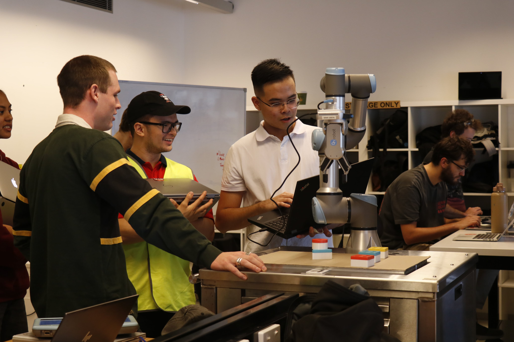

Who Am I?

Mechatronics student - Robotics enthusiast
The study of mechatronics engineering has led me to understand how software and hardware work together to create system operations. The deeper I studied the subject I understood that I have an unrelenting interest in software systems that control different systems especially their essential function as the core of robots and other technological devices.
3D printer enthusiast
The ability to transform concepts into physical objects drives my interest in 3D printing technology. I spent time in SolidWorks 3D modeling before wondering about the process of converting digital designs into actual physical objects. My discovery of 3D printing capabilities ignited my passion so I decided to purchase my own printer. The purchase of my 3D printer started my passionate adventure with this technology. I began operating my 3D printing service from home after using the printer for six months. The continuous operation of my Ender 3 V2 led me to discover a problem. The X gantry deflection created misalignment problems which disrupted the parallel relationship between the gantry and the bed surface. I started a new project to create my own 3D printer after deciding to fix the issue. I decided to build my own printer instead of buying a new one because it was cheaper to get components from China than to purchase branded spare parts. The solution I chose both fixed the problem and enabled me to start independent projects which demonstrated my creative skills and my commitment to 3D printing expertise.
About myself

See the need, fill the need
'See the need, fill the need' - Rodney Copperbottom, encapsulates my ethos of constant innovation and self-improvement. This mantra is the driving force behind my commitment to continuously enhance not just my work but also myself."
Self-explaination
I learn by explaining things to myself. It's like having a conversation with myself until I can explain a concept without any trouble. This way, I know I've really understood it. This method, also known as Feynman's method, was created by the physicist Richard Feynman, one of my favorite scientists who was involved in the Manhattan Project.
Practice makes perfect
The path to mastery starts with continuous practice which leads people to understand fundamental principles through repeated work. My engineering practice follows this principle which I adopt as my learning method. I strongly support the development of natural understanding for the intricate aspects within our specialized fields. This proactive immersion ensures that when confronted with challenges, relying on a deep-seated understanding is more effective than referencing lecture materials or textbooks at the point of need.